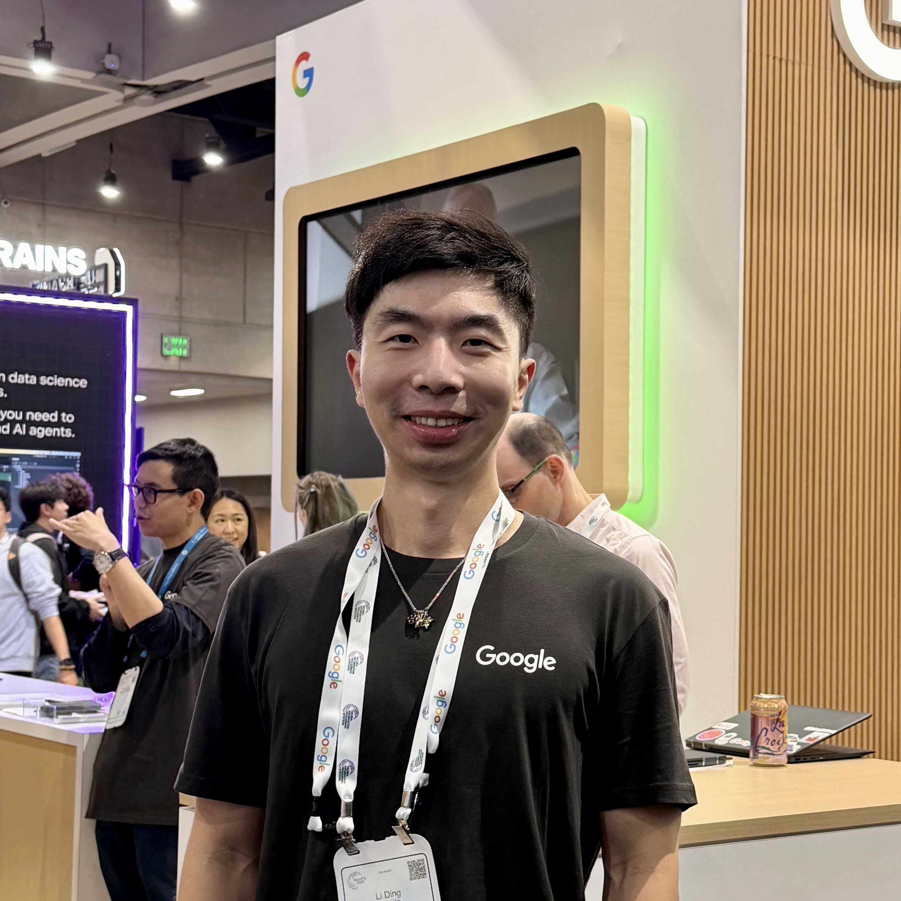
Li Ding | 丁立
liding256@gmail.com
I'm currently at Google DeepMind ( Mountain View), working on AI safety and security research. My focus is on control for autonomous AI agents, especially coding agents.
Previously, I worked on pretraining, architecture, and runtime optimization for the Gemma and Gemini Nano models.
My PhD research focused on alignment for safety and creativity with diversity-driven and open-ended approaches. I received my PhD from UMass Amherst CICS, advised by Lee Spector, and worked closely with Scott Niekum (UMass), Joel Lehman (formerly OpenAI), and Jeff Clune (UBC, DeepMind).
I interned at Google Research and Meta. Before PhD, I was a researcher at MIT with Lex Fridman and Bryan Reimer, and a graduate student at MIT CSAIL. I did my master's at Univ. of Rochester with Chenliang Xu.
Research
My research focuses on the control and security of AI agents, ensuring that autonomous systems, particularly coding agents, remain aligned with human intent and operate within safe boundaries. I develop methods combining reinforcement learning from human feedback (RLHF), open-ended search, and oversight to improve the reliability and security of LLM-based agents.
Previously, my PhD research centered on alignment for safety and creativity using diversity-driven optimization in open-ended environments. My work has spanned reinforcement learning, generative models, robotics, computer vision, and program synthesis.
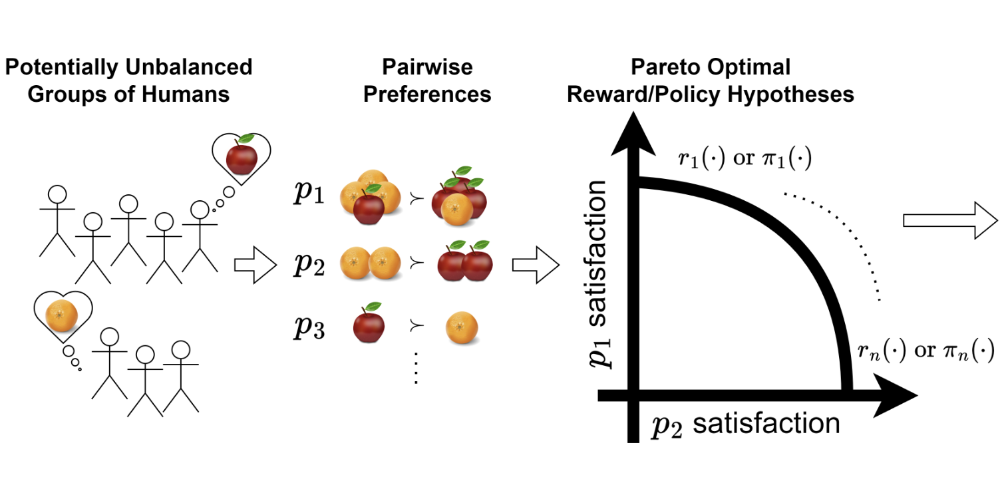
Pareto-Optimal Learning from Preferences with Hidden Context
Ryan Boldi, Li Ding, Lee Spector, Scott
Niekum
RLC 2025
arXiv
POPL learns Pareto-optimal policies or reward functions in RLHF, addressing hidden contexts such as diverse group preferences without needing group labels, offering safe and fair alignment of agents and LLMs.
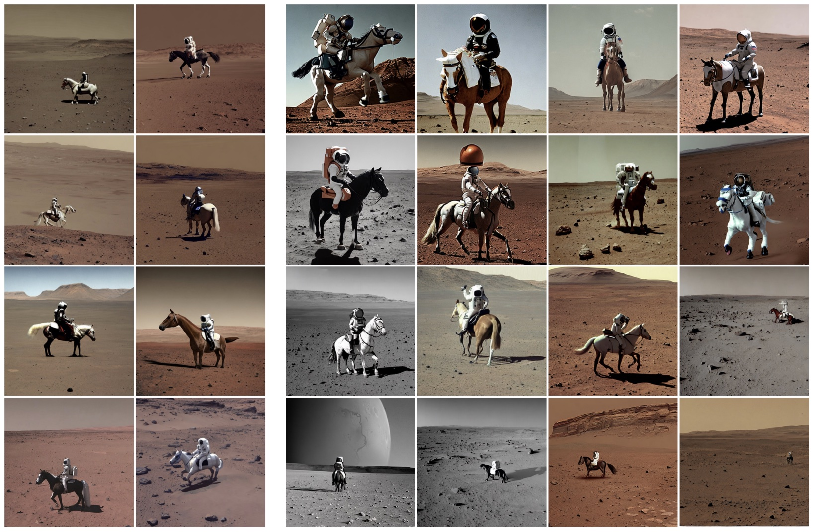
Quality Diversity through Human Feedback: Towards Open-Ended Diversity-Driven Optimization
Li Ding, Jenny Zhang ,
Jeff Clune , Lee Spector ,
Joel Lehman
ICML 2024
NeurIPS 2023: ALOE Workshop (Spotlight)
project page
arXiv
demo
talk
code
tutorial
QDHF learns diversity metrics from human feedback and uses those to optimize for the discovery of novel solutions, enhancing the task-solving capabilities of RL agents and the creativity of generative models.
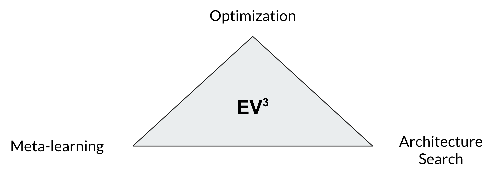
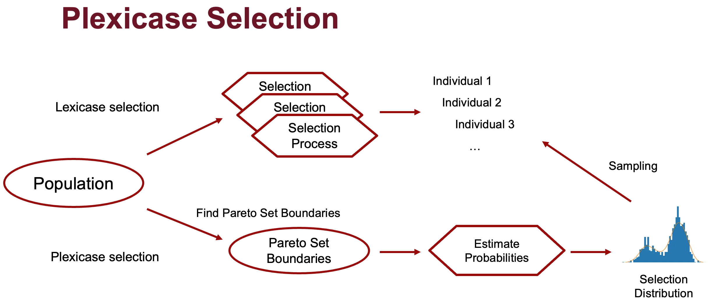
Probabilistic Lexicase Selection
Li Ding, Edward Pantridge, Lee Spector
GECCO 2023
paper
arXiv
code
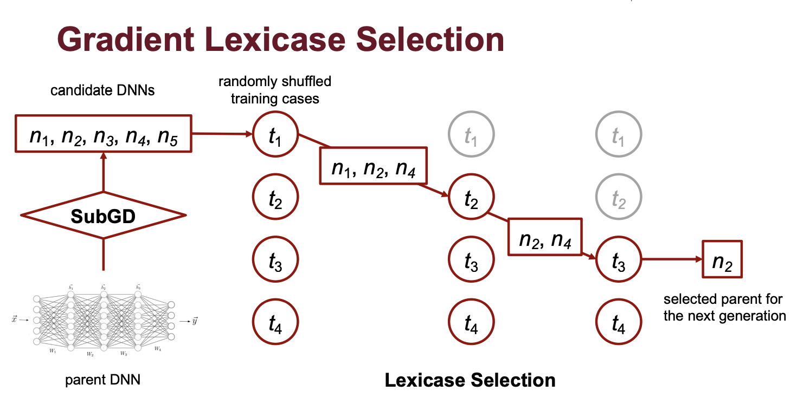
Optimizing Neural Networks with Gradient Lexicase Selection
Li Ding, Lee Spector
ICLR 2022
paper
video
poster
code
We propose an optimization framework that improves the generalization of deep networks by learning more diverse representations.
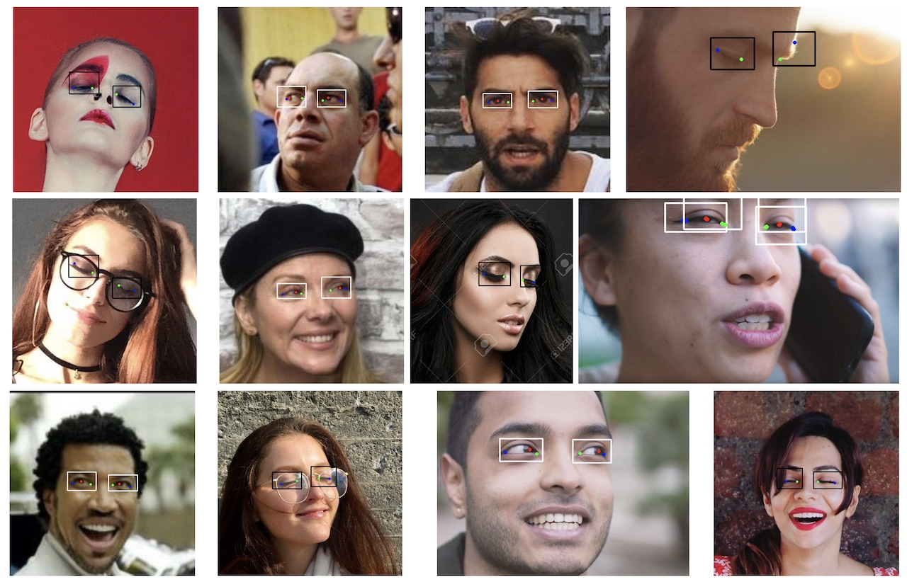
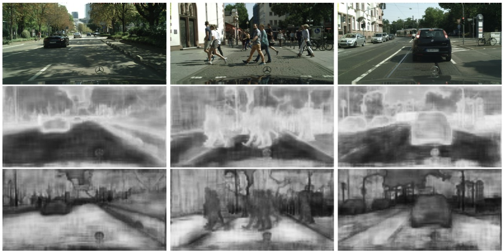
Value of Temporal Dynamics Information in Driving Scene Segmentation
Li Ding, Jack Terwilliger, Rini Sherony, Bryan Reimer, Lex Fridman
IEEE Transactions on Intelligent Vehicles, 2021
paper
arXiv
MIT DriveSeg Dataset
Press coverage: MIT News
Forbes
InfoQ
TechCrunch
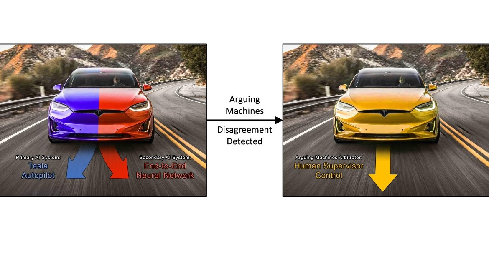
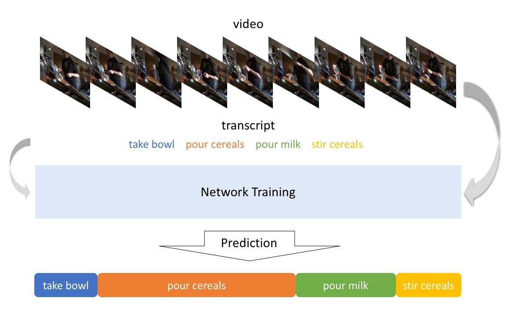
Misc.
Teaching:
TA for MIT 6.S094: Deep
Learning for Self-Driving Cars (Winter 2018-19).
TA for MIT 6.S099: Artificial General Intelligence (Winter 2019).
Reviewer:
ICLR, NeurIPS, ICML, JMLR, CVPR, ICCV, ECCV, etc.
Open source projects:
google-research/ev3: Meta-learning optimization in JAX.
facebookresearch/d2go: Efficient model training and deployment on mobile
platforms.
pyribs: An
open-source library for quality diversity optimization.
mit-deep-learning: Tutorials and coding assignments for MIT Deep Learning
courses (9k+ stars).
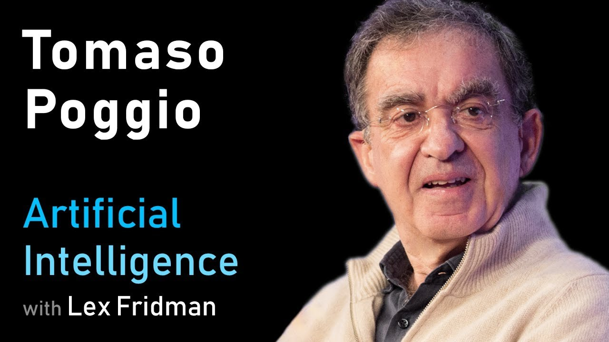
MIT AI Podcast
Helped prepare interview questions, search for guest speakers, etc. for a podcast hosted by Lex Fridman about technology, science, and the human condition.
(Ranked #1 on Apple Podcasts in the technology category, 1M views on YouTube.)
(My personal favorite episode is Tomaso Poggio, highly
recommended!)
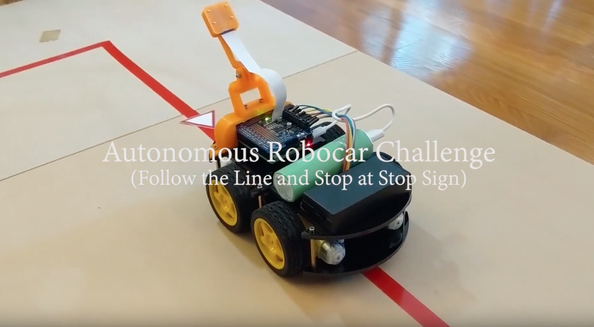
MIT Robocar Workshop
Instructor for a summer/winter workshop at MIT with Tom Bertalan to college and high school students on building and programming
autonomous robocars.